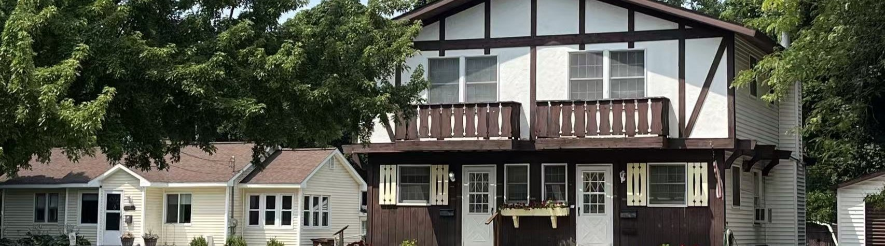

Housing Options
Understanding Housing Needs for the City
Today, there are approximately 8,252 housing units in the city (not including on-campus housing, short- or long-term care facilities, or homeless shelters). There are 15,817 jobs within the city limits, but only 2,166 employees both live and work in the city. In contrast, 12,118 employees live outside of the city and commute to work. By providing sufficient, diverse, and affordable housing options, the City can better attract and retain these workers, ensuring long-term economic vitality and sustainability.
Housing Types
Among these housing units, 40% are detached single-family houses, 36% are multi-unit complexes (apartments), 10% are duplexes, and 24% consist of other dwelling types, including houses with accessory dwelling units, triplexes, fourplexes, other multiplexes, townhouses, and mixed-use buildings.